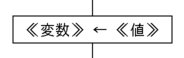
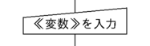
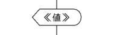
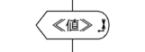
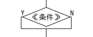
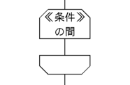
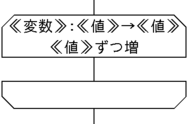
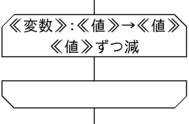
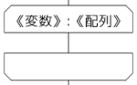

数は整数と実数が区別される。小数部分を含まない数は整数とする。例：3.0は実数
文字列は""または''または「」で囲む（""中の"は\"，''中の'は\'と表記する）。
真偽値はTrueとFalseのどちらかである。
[1,2,3]のようなリストも使える。
{"x":3, "y":4}のような辞書も使える。
PyPENでは整数・実数・文字列・真偽値は値渡しであるが，リスト・辞書は参照の値渡しである。 つまり，リストや辞書を引数に渡すときは，そのリストや辞書の中身が変わることがある。 リストや辞書を値渡ししたいときには，copy関数を使う。
a = [1,2,3]
b = a # aとbは同じリストを参照している
c = copy(a) # cはaのコピー
a[0] = 10 # aは[10,2,3]， bは[10,2,3]， cは[1,2,3]
b[1] = 20 # aは[10,20,3]，bは[10,20,3]，cは[1,2,3]
c[2] = 30 # aは[10,20,3]，bは[10,20,3]，cは[1,2,30]
変数名は次のいずれかである（関数名も同様）。
変数を宣言することはできない。値を代入した時点で変数は生成される。 また，変数は型を持たない。
変数名の後に番号や文字列をいれた[ ]をつけてリストや辞書を使うことができる。 二次元以上のリストの要素はa[1,2]またはa[1][2]などのように使う。
+,-,*,/,//,%,**が使える。*は掛け算，/と//は割り算，%は割り算の余り（整数どうしに限る）を表す。 ただし/の割り算は余りを出さない割り算（結果は実数）で，//の割り算は商の整数部分（結果は整数）を表す。 また，**はべき乗を表す。
ビット演算は&,|,^,~,<<,>>が使える。
「《整数》個の《値》」でリストをつくることもできる。
例：a=10個の0 → a=[0,0,0,0,0,0,0,0,0,0]
2つの値を==,≠,!=,>,<,≧,>=,≦,<=で比べることができる。 !=は≠，>=は≧，<=は≦とそれぞれ同じである。 条件式を"and"，"or"でつないだり，"not"を前置することで否定することができる。 "not"，"and"，"or"の順に優先的に結合され，同じものどうしは左から順に評価される。 3つ以上の値を比べる場合は，たとえばa<b<cをa<b and b<cのように評価する。
リストの中にある値が含まれるかどうかを"《リスト》の中に《値》"で調べることができる。
真偽値以外が条件として使われる場合，次の場合を除いてTrueとみなされる。
"と"で文字列を結合することができる。数値は文字列に変換してから結合される。 例："こん"と"にちは"→"こんにちは"。1と2→"12"
《変数》=《値》

"《リスト変数》に《値》を追加する"，"《リスト変数》に《リスト値》を連結する"という構文も用意されている。
a=[0,1,2,3,4,5]
aに6を追加する
aに[7,8]を連結する
+=や&=のような複合代入演算子も使える。
《変数》に整数を入力する

"整数"の部分は"実数""文字列""真偽"にすることもできる。
表示する(《値》)
《値》を表示する
print(《値》)

改行無しで表示する(《値》)
《値》を改行無しで表示する

《値》にリストを指定すると，リストの全要素が表示される。値をコンマ区切りで複数指定すると，それらが空白区切りで表示される。
もし《条件》ならば：
《命令》
もし《条件》ならば：
《命令》
そうでなければ：
《命令》
「そうでなくもし」を使うこともできるが，これを使うとフローチャートの表示は行わない。
もし《条件》ならば：
《命令》
そうでなくもし《条件》ならば：
《命令》
そうでなければ：
《命令》
次のように書くこともできる。
if 《条件》：
《命令》
elif 《条件》：
《命令》
else：
《命令》

《条件》の間：
《命令》
while 《条件》：
《命令》

《変数》を《値》から《値》まで《値》ずつ増やしながら：
《命令》

《変数》を《値》から《値》まで《値》ずつ減らしながら：
《命令》

「《値》ずつ」を省略すると「1ずつ」になる。
次のような書き方もできる（「減らしながら」も可能）。《区間》は数学の閉区間や開区間のように[1,5]や(1,5)，(1,5]，[1,5)のように指定できる。
《変数》を区間《区間》で《値》ずつ増やしながら:
《命令》
《リスト》の要素《変数》について繰り返す：
《命令》
または
for 《変数》 in 《リスト》：
《命令》

どのループについても"繰り返しを抜ける"命令で繰り返しから抜けることができる。
注意：関数を定義したプログラムについては，フローチャートの実装がまだできていない。 この状態で間違ってフローチャートを変更するとプログラムがごそっと消えてしまうので， 関数を定義するプログラムではフローチャートの表示をしないことをお勧めします。
関数 hoge(x)：
…
《値》を返す
または
def hoge(x)：
…
《値》を返す
以前は値を返すか返さないかで関数・手続きと分けていたが，関数に一本化した。引数を取らない場合であってもカッコが必要（定義するときも呼び出すときも）。「関数を抜ける」で関数の途中から抜けることもできる。
なお，関数は呼び出される前に定義しなくてはいけない。
Python風のインデントが合ってないとエラーになる。インデントする前の行末は"："が必要。
別途まとめることにした。
今後も追加していくつもりである。